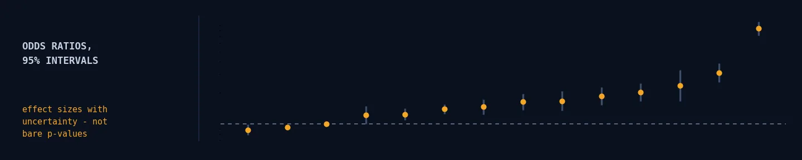
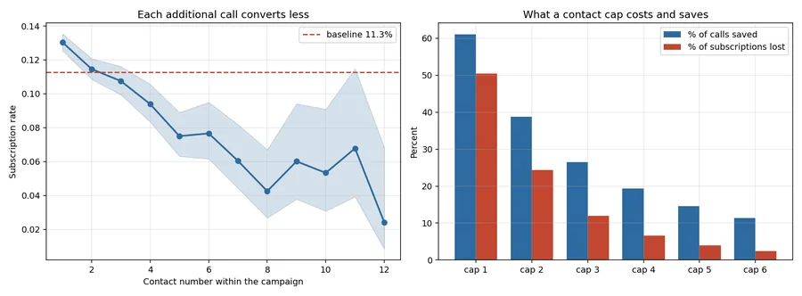
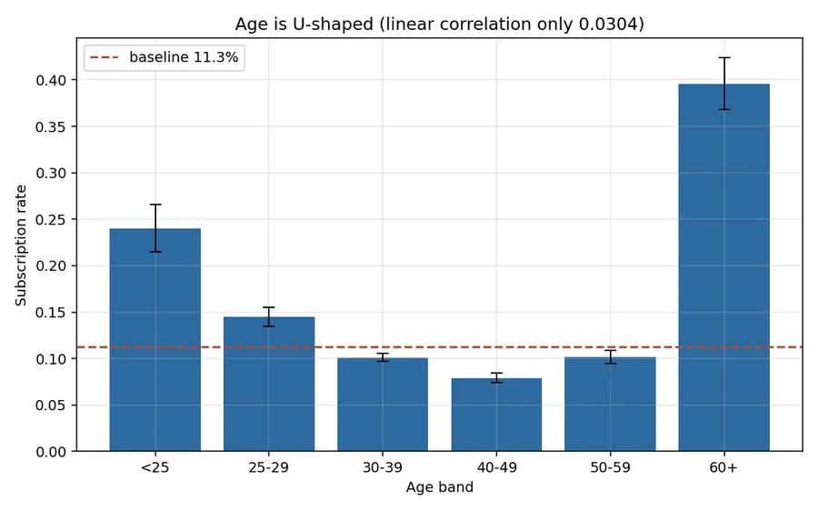

Marketing analytics · inference · effect sizes
Customer Insights: Term Deposit Campaign
The three strongest signals in the entire dataset were macroeconomic, not customer attributes. This campaign was about when, not who.

An exploratory analysis that ends in quantified recommendations, not a wall of charts.
Every association is reported with an effect size and a confidence interval, because with 41,188 rows a feature that moves the subscription rate by a third of a percentage point still returns p < 0.001 — so p-values cannot rank anything.
The campaign was mostly about when, not who
Ranked by effect size, the three strongest associations in the entire dataset are not customer attributes at all: national employment (0.498), the 3-month euribor rate (0.487) and employment variation (0.434). The strongest customer attribute, previous campaign outcome, comes fourth at 0.320. Age, linearly, scores 0.030 — negligible.
| Euribor quartile | Contacts | Subscription rate |
|---|---|---|
| Q1 (lowest rates) | 10,543 | 25.4% |
| Q2 | 11,512 | 8.3% |
| Q3 | 9,342 | 5.1% |
| Q4 (highest rates) | 9,791 | 5.5% |
A 4.6× difference, driven by nothing the bank chose. The campaign ran through the financial crisis: when rates collapsed a fixed-rate term deposit became attractive and people bought it; when rates were high, no amount of calling helped.
Any "who should we call" model fitted on this data without accounting for the macro environment is largely learning the calendar.
The strongest predictor is unusable
duration — the length of the call in seconds — correlates with subscription at 0.405, stronger than any customer attribute. It is also useless, and including it is the most common error in published analyses of this dataset.
Subscribers' calls averaged 553 seconds; non-subscribers' 221. Of the 4,181 calls lasting under a minute, 0.02% converted — 1 in 4,181.
The direction of causation runs the wrong way. A call is long because it is going well. Duration is known only once the call has ended, so it can describe a conversation that happened — it cannot tell anyone who to ring tomorrow. It is excluded from every recommendation here.
Cap contacts at three, and use the list you already have
Conversion falls 53% from the first contact (13.0%) to the fifth or later (6.1%), and the campaign made up to 56 calls to a single person. A cap of three removes a quarter of all call volume for 12% of subscriptions — the point where the two curves separate most.
| Previous campaign outcome | Subscription rate | Lift |
|---|---|---|
| Success | 65.1% | 5.8× |
| Failure | 14.2% | 1.3× |
| Never contacted | 8.8% | 0.8× |
A customer who took the last offer takes this one 65% of the time, against an 11.3% baseline — an adjusted odds ratio of 8.35 [7.17, 9.74], the largest effect the bank actually controls. And only 3.7% of the contact list had ever been contacted before. This list is being under-used.

Age is a band, not a trend
Conversion is U-shaped. Under-25s convert at 24.0% and over-60s at 39.6%; the 40–49 band — the largest group in the contact list at 10,526 people — converts worst, at 7.9%.
A linear age term reports a correlation of 0.030 and would conclude age does not matter. Averaging over a U-shape produces exactly that: a near-zero coefficient hiding two strong, opposite effects. This is the argument for looking at banded rates before fitting anything.

Two bugs worth recording
Folding rare categories into a new "other" bucket looked tidier and was wrong. get_dummies(drop_first=True) then made that 3-row bucket the reference level, so the two remaining default dummies summed to 1 for all but 3 rows and were near-aliased with the intercept. The fit produced coefficients of +17.3 and +16.8 against an intercept of −18.3 and failed to converge — all from three rows.
Rare levels are now folded into the modal level, and remaining aliasing is removed by a rank-revealing QR decomposition rather than by hand-picking columns. The pipeline also raises if the optimiser fails to converge, because a non-converged fit still returns ordinary-looking numbers.
The second was mine, in the prose rather than the model: the generated euribor recommendation said the lowest quartile converted at 5.5% when the data said 25.4% — the two figures transposed. There is now a regression test asserting that the figure described as the lowest quartile is the lowest quartile's.
What this does not support
- This is association, not causation. Nothing was randomised. The contact-cap recommendation is the most exposed — customers called five times may differ systematically from those called once, so the decay is partly selection, not fatigue alone.
- The macro finding is confounded with time. Euribor, employment and calendar month all move together over 2008–2010, and with one campaign there is no way to separate them.
- Only 3.7% of contacts had a prior campaign history, so the 65.1% success rate rests on 1,373 people and will not survive being scaled to the whole base.
- One bank, one product, one country, 2008–2010 — a crisis period, which is precisely what makes the macro effect so visible and so unlikely to replicate.
durationis excluded, which lowers every apparent effect. That is the point, but it means these numbers are not comparable with published analyses that leave it in.